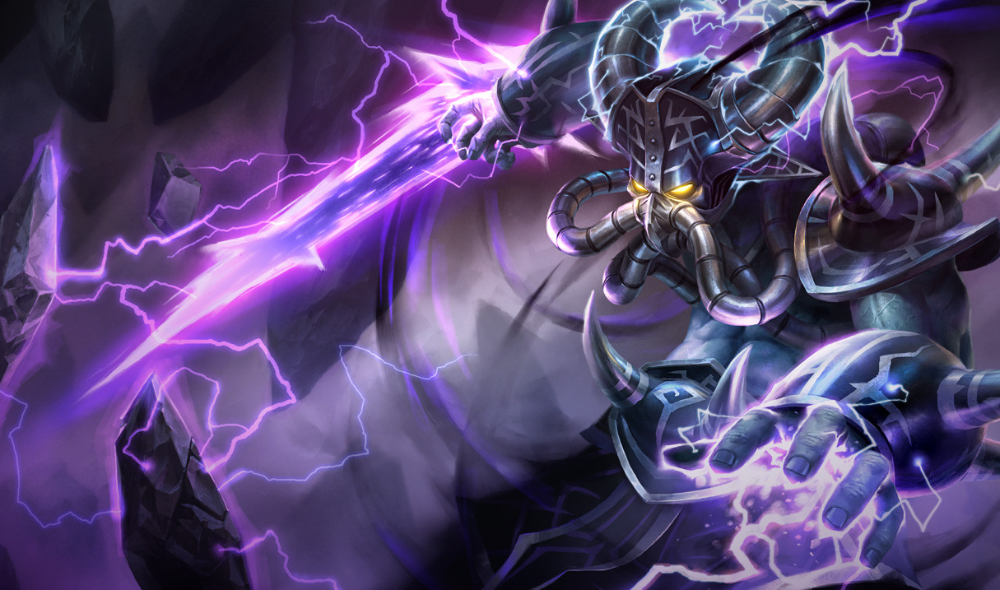

Tu devrais essayer Kassadin

tout droit sorti du néant, kassadin est un personnage connu de la communauté pour ne pouvoir commencer à jouer qu'à partir du niveau 16 (niveau maximal atteignable lors du parti 18) cependant il reste térrifiant si il arrive à s'équiper avant d'avoir atteint ce niveau au point ou l'équipe ennemie peut prendre peur et abandonner avant même que vous ne deveniez trop puissant